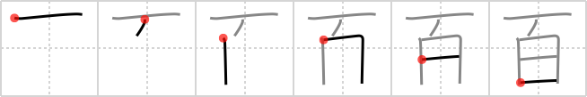

百
← →
hundred

Reading:
On-Yomi: ヒャク、ビャク — Kun-Yomi: もも
Heisig story:
The Japanese refer to a person's 99th birthday as a "white year" because white is the kanji you are left with if you subtract one from a hundred.
Koohii stories:
1) [noushina] 30-12-2006(152): 100 turned sideways. sort of the same as what ashoksaraf said.
2) [sethimayne] 22-9-2007(89): That dirty ceiling was painted WHITE a hundred times!
3) [johanvg] 5-7-2006(36): Hundred is 1 0 0 written from top to bottom. 一 is connected with the two concatenated 口 because the latter would otherwise fall off.
4) [Chauser] 5-11-2008(35): The "white year" (99) plus one more. 100!
5) [ashoksaraf] 12-12-2006(19): Two O hung on one.